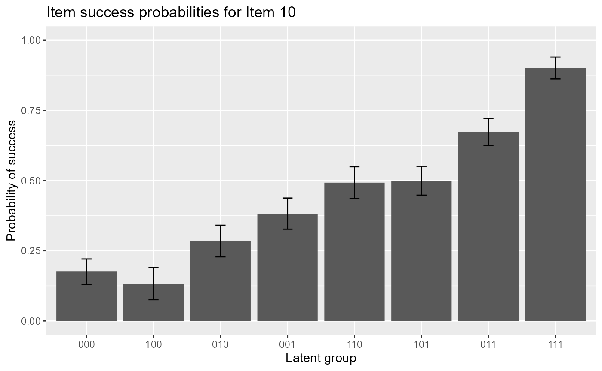
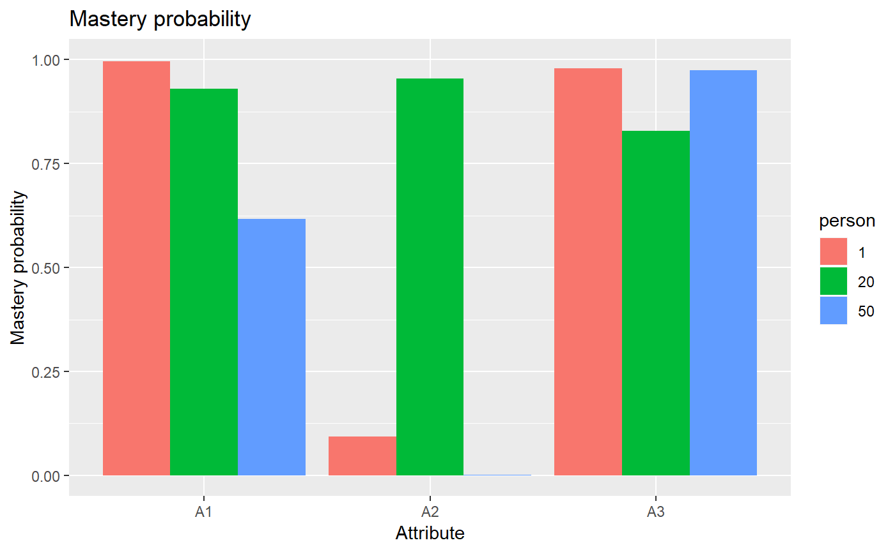

vignettes/OnlineExercises/LCDM_example.Rmd
LCDM_example.Rmdlibrary(GDINA)## ==============================================
## GDINA Package for Cognitive Diagnosis Modeling
## Version 2.1.15 (2018-6-6)
## ==============================================# A simulated data in GDINA package
dat <- sim10GDINA$simdat
Q <- sim10GDINA$simQ
#find design matrix for LCDM for each item => must be a list
D <- lapply(rowSums(Q),designmatrix,model="GDINA")
# Fit LCDM model - see Example 13a in GDINA help page also
est <- GDINA(dat = dat, Q = Q, model = "UDF", design.matrix = D, linkfunc = "logit")##
Iter = 1 Max. abs. change = 0.40691 Deviance = 12821.161
Iter = 2 Max. abs. change = 0.05266 Deviance = 11947.639
Iter = 3 Max. abs. change = 0.02836 Deviance = 11890.214
Iter = 4 Max. abs. change = 0.01736 Deviance = 11866.225
Iter = 5 Max. abs. change = 0.01173 Deviance = 11854.666
Iter = 6 Max. abs. change = 0.00886 Deviance = 11848.420
Iter = 7 Max. abs. change = 0.00763 Deviance = 11844.675
Iter = 8 Max. abs. change = 0.00643 Deviance = 11842.262
Iter = 9 Max. abs. change = 0.00557 Deviance = 11840.635
Iter = 10 Max. abs. change = 0.00503 Deviance = 11839.509
Iter = 11 Max. abs. change = 0.00449 Deviance = 11838.712
Iter = 12 Max. abs. change = 0.00398 Deviance = 11838.141
Iter = 13 Max. abs. change = 0.00351 Deviance = 11837.725
Iter = 14 Max. abs. change = 0.00308 Deviance = 11837.419
Iter = 15 Max. abs. change = 0.00270 Deviance = 11837.191
Iter = 16 Max. abs. change = 0.00237 Deviance = 11837.020
Iter = 17 Max. abs. change = 0.00208 Deviance = 11836.891
Iter = 18 Max. abs. change = 0.00183 Deviance = 11836.792
Iter = 19 Max. abs. change = 0.00161 Deviance = 11836.715
Iter = 20 Max. abs. change = 0.00142 Deviance = 11836.656
Iter = 21 Max. abs. change = 0.00125 Deviance = 11836.609
Iter = 22 Max. abs. change = 0.00110 Deviance = 11836.572
Iter = 23 Max. abs. change = 0.00098 Deviance = 11836.543
Iter = 24 Max. abs. change = 0.00087 Deviance = 11836.520
Iter = 25 Max. abs. change = 0.00077 Deviance = 11836.502
Iter = 26 Max. abs. change = 0.00069 Deviance = 11836.487
Iter = 27 Max. abs. change = 0.00061 Deviance = 11836.475
Iter = 28 Max. abs. change = 0.00055 Deviance = 11836.465
Iter = 29 Max. abs. change = 0.00049 Deviance = 11836.457
Iter = 30 Max. abs. change = 0.00044 Deviance = 11836.451
Iter = 31 Max. abs. change = 0.00039 Deviance = 11836.446
Iter = 32 Max. abs. change = 0.00035 Deviance = 11836.441
Iter = 33 Max. abs. change = 0.00032 Deviance = 11836.438
Iter = 34 Max. abs. change = 0.00029 Deviance = 11836.435
Iter = 35 Max. abs. change = 0.00026 Deviance = 11836.433
Iter = 36 Max. abs. change = 0.00024 Deviance = 11836.431
Iter = 37 Max. abs. change = 0.00021 Deviance = 11836.429
Iter = 38 Max. abs. change = 0.00019 Deviance = 11836.428
Iter = 39 Max. abs. change = 0.00018 Deviance = 11836.427
Iter = 40 Max. abs. change = 0.00016 Deviance = 11836.426
Iter = 41 Max. abs. change = 0.00014 Deviance = 11836.425
Iter = 42 Max. abs. change = 0.00013 Deviance = 11836.424
Iter = 43 Max. abs. change = 0.00012 Deviance = 11836.424
Iter = 44 Max. abs. change = 0.00011 Deviance = 11836.423
Iter = 45 Max. abs. change = 0.00010 Deviance = 11836.423#####################################
#
# Summary Information
#
#####################################
# print estimation information
est## Call:
## GDINA(dat = dat, Q = Q, model = "UDF", linkfunc = "logit", design.matrix = D)
##
## GDINA version 2.1.15 (2018-6-6)
## ===============================================
## Data
## -----------------------------------------------
## # of individuals groups items
## 1000 1 10
## ===============================================
## Model
## -----------------------------------------------
## Fitted model(s) = UDF
## Attribute structure = saturated
## Attribute level = Dichotomous
## ===============================================
## Estimation
## -----------------------------------------------
## Number of iterations = 45
## For the final iteration:
## Max abs change in item success prob. = 0.0001
## Max abs change in mixing proportions = 0.0000
## Change in -2 log-likelihood = 0.0004
## Time used = 0.9976 secs# summary information
summary(est)##
## Test Fit Statistics
##
## Loglik = -5918.21
## AIC = 11926.42 | penalty = 90
## BIC = 12147.27 | penalty = 310.85
## # par = 45
##
## Attribute Prevalence
##
## Level0 Level1
## A1 0.5028 0.4972
## A2 0.4974 0.5026
## A3 0.4784 0.5216AIC(est) #AIC## [1] 11926.42BIC(est) #BIC## [1] 12147.27logLik(est) #log-likelihood value## 'log Lik.' -5918.211 (df=45)deviance(est) # deviance: -2 log-likelihood## [1] 11836.42npar(est) # number of parameters## No. of total parameters = 45
## No. of item parameters = 38
## No. of population parameters = 7nobs(est) # number of observations## [1] 1000# discrimination indices
extract(est, "discrim")## P(1)-P(0) GDI
## Item 1 0.6934071 0.12019968
## Item 2 0.6405405 0.10257021
## Item 3 0.8198972 0.16774337
## Item 4 0.7797573 0.08455189
## Item 5 0.7173805 0.10214937
## Item 6 0.7406485 0.10203519
## Item 7 0.7169057 0.06523559
## Item 8 0.7893118 0.09124109
## Item 9 0.7062360 0.06232887
## Item 10 0.7253640 0.05496980#####################################
#
# structural parameters
#
#####################################
coef(est) # item probabilities of success for each reduced latent class## $`Item 1`
## P(0) P(1)
## 0.2052 0.8986
##
## $`Item 2`
## P(0) P(1)
## 0.1391 0.7796
##
## $`Item 3`
## P(0) P(1)
## 0.0893 0.9092
##
## $`Item 4`
## P(00) P(10) P(01) P(11)
## 0.1159 0.2951 0.4741 0.8957
##
## $`Item 5`
## P(00) P(10) P(01) P(11)
## 0.1057 0.0791 0.0904 0.8231
##
## $`Item 6`
## P(00) P(10) P(01) P(11)
## 0.1764 0.9029 0.9302 0.9170
##
## $`Item 7`
## P(00) P(10) P(01) P(11)
## 0.0543 0.4713 0.3923 0.7712
##
## $`Item 8`
## P(00) P(10) P(01) P(11)
## 0.1107 0.2585 0.2730 0.9000
##
## $`Item 9`
## P(00) P(10) P(01) P(11)
## 0.0995 0.3746 0.4189 0.8057
##
## $`Item 10`
## P(000) P(100) P(010) P(001) P(110) P(101) P(011) P(111)
## 0.1757 0.1326 0.2846 0.3823 0.4928 0.4997 0.6734 0.9011coef(est, withSE = TRUE) # item probabilities of success & standard errors## $`Item 1`
## P(0) P(1)
## Est. 0.2052 0.8986
## S.E. 0.0258 0.0224
##
## $`Item 2`
## P(0) P(1)
## Est. 0.1391 0.7796
## S.E. 0.0221 0.0247
##
## $`Item 3`
## P(0) P(1)
## Est. 0.0893 0.9092
## S.E. 0.0213 0.0199
##
## $`Item 4`
## P(00) P(10) P(01) P(11)
## Est. 0.1159 0.2951 0.4741 0.8957
## S.E. 0.0279 0.0369 0.0379 0.0282
##
## $`Item 5`
## P(00) P(10) P(01) P(11)
## Est. 0.1057 0.0791 0.0904 0.8231
## S.E. 0.0249 0.0252 0.0256 0.0335
##
## $`Item 6`
## P(00) P(10) P(01) P(11)
## Est. 0.1764 0.9029 0.9302 0.917
## S.E. 0.0412 0.0314 0.0280 0.023
##
## $`Item 7`
## P(00) P(10) P(01) P(11)
## Est. 0.0543 0.4713 0.3923 0.7712
## S.E. 0.0238 0.0393 0.0369 0.0322
##
## $`Item 8`
## P(00) P(10) P(01) P(11)
## Est. 0.1107 0.2585 0.2730 0.9000
## S.E. 0.0262 0.0382 0.0386 0.0349
##
## $`Item 9`
## P(00) P(10) P(01) P(11)
## Est. 0.0995 0.3746 0.4189 0.8057
## S.E. 0.0294 0.0372 0.0362 0.0288
##
## $`Item 10`
## P(000) P(100) P(010) P(001) P(110) P(101) P(011) P(111)
## Est. 0.1757 0.1326 0.2846 0.3823 0.4928 0.4997 0.6734 0.9011
## S.E. 0.0449 0.0570 0.0563 0.0554 0.0567 0.0517 0.0479 0.0391coef(est, what = "delta") # delta parameters## $`Item 1`
## [1] -1.3541 3.5360
##
## $`Item 2`
## [1] -1.8228 3.0864
##
## $`Item 3`
## [1] -2.3218 4.6261
##
## $`Item 4`
## [1] -2.0319 1.1610 1.9282 1.0925
##
## $`Item 5`
## [1] -2.1351 -0.3202 -0.1734 4.1662
##
## $`Item 6`
## [1] -1.5410 3.7712 4.1314 -3.9588
##
## $`Item 7`
## [1] -2.8580 2.7429 2.4201 -1.0901
##
## $`Item 8`
## [1] -2.0835 1.0299 1.1040 2.1471
##
## $`Item 9`
## [1] -2.2028 1.6904 1.8756 0.0594
##
## $`Item 10`
## [1] -1.5456 -0.3325 0.6238 1.0659 1.2254 0.8109 0.5794 -0.2179coef(est, what = "delta", withSE = TRUE) # delta parameters## $`Item 1`
## [,1] [,2]
## Est. -1.3541 3.536
## S.E. 0.1582 0.325
##
## $`Item 2`
## [,1] [,2]
## Est. -1.8228 3.0864
## S.E. 0.1847 0.2566
##
## $`Item 3`
## [,1] [,2]
## Est. -2.3218 4.6261
## S.E. 0.2622 0.3866
##
## $`Item 4`
## [,1] [,2] [,3] [,4]
## Est. -2.0319 1.1610 1.9282 1.0925
## S.E. 0.2723 0.3446 0.3259 0.5189
##
## $`Item 5`
## [,1] [,2] [,3] [,4]
## Est. -2.1351 -0.3202 -0.1734 4.1662
## S.E. 0.2629 0.4876 0.4253 0.6576
##
## $`Item 6`
## [,1] [,2] [,3] [,4]
## Est. -1.5410 3.7712 4.1314 -3.9588
## S.E. 0.2836 0.4974 0.5614 0.8120
##
## $`Item 7`
## [,1] [,2] [,3] [,4]
## Est. -2.8580 2.7429 2.4201 -1.0901
## S.E. 0.4638 0.5127 0.5037 0.5957
##
## $`Item 8`
## [,1] [,2] [,3] [,4]
## Est. -2.0835 1.0299 1.104 2.1471
## S.E. 0.2665 0.3501 0.351 0.6169
##
## $`Item 9`
## [,1] [,2] [,3] [,4]
## Est. -2.2028 1.6904 1.8756 0.0594
## S.E. 0.3277 0.3895 0.3781 0.4815
##
## $`Item 10`
## [,1] [,2] [,3] [,4] [,5] [,6] [,7] [,8]
## Est. -1.5456 -0.3325 0.6238 1.0659 1.2254 0.8109 0.5794 -0.2179
## S.E. 0.3098 0.6141 0.4381 0.4178 0.7581 0.7326 0.5741 1.0221coef(est, what = "gs") # guessing and slip parameters## guessing slip
## Item 1 0.2052 0.1014
## Item 2 0.1391 0.2204
## Item 3 0.0893 0.0908
## Item 4 0.1159 0.1043
## Item 5 0.1057 0.1769
## Item 6 0.1764 0.0830
## Item 7 0.0543 0.2288
## Item 8 0.1107 0.1000
## Item 9 0.0995 0.1943
## Item 10 0.1757 0.0989coef(est, what = "gs", withSE = TRUE) # guessing and slip parameters & standard errors## guessing slip SE[guessing] SE[slip]
## Item 1 0.2052 0.1014 0.0258 0.0224
## Item 2 0.1391 0.2204 0.0221 0.0247
## Item 3 0.0893 0.0908 0.0213 0.0199
## Item 4 0.1159 0.1043 0.0279 0.0282
## Item 5 0.1057 0.1769 0.0249 0.0335
## Item 6 0.1764 0.0830 0.0412 0.0230
## Item 7 0.0543 0.2288 0.0238 0.0322
## Item 8 0.1107 0.1000 0.0262 0.0349
## Item 9 0.0995 0.1943 0.0294 0.0288
## Item 10 0.1757 0.0989 0.0449 0.0391# Estimated proportions of latent classes
coef(est,"lambda")## p(000) p(100) p(010) p(001) p(110) p(101) p(011) p(111)
## 0.1268 0.1054 0.1149 0.1201 0.1313 0.1452 0.1409 0.1155# success probabilities for each latent class
coef(est,"LCprob")## 000 100 010 001 110 101 011 111
## Item 1 0.2052 0.8986 0.2052 0.2052 0.8986 0.8986 0.2052 0.8986
## Item 2 0.1391 0.1391 0.7796 0.1391 0.7796 0.1391 0.7796 0.7796
## Item 3 0.0893 0.0893 0.0893 0.9092 0.0893 0.9092 0.9092 0.9092
## Item 4 0.1159 0.2951 0.1159 0.4741 0.2951 0.8957 0.4741 0.8957
## Item 5 0.1057 0.1057 0.0791 0.0904 0.0791 0.0904 0.8231 0.8231
## Item 6 0.1764 0.9029 0.9302 0.1764 0.9170 0.9029 0.9302 0.9170
## Item 7 0.0543 0.4713 0.0543 0.3923 0.4713 0.7712 0.3923 0.7712
## Item 8 0.1107 0.2585 0.2730 0.1107 0.9000 0.2585 0.2730 0.9000
## Item 9 0.0995 0.0995 0.3746 0.4189 0.3746 0.4189 0.8057 0.8057
## Item 10 0.1757 0.1326 0.2846 0.3823 0.4928 0.4997 0.6734 0.9011#####################################
#
# person parameters
#
#####################################
head(personparm(est)) # EAP estimates of attribute profiles## A1 A2 A3
## [1,] 1 0 1
## [2,] 1 1 1
## [3,] 0 1 1
## [4,] 1 1 1
## [5,] 0 0 1
## [6,] 1 0 0head(personparm(est, what = "MAP")) # MAP estimates of attribute profiles## A1 A2 A3 multimodes
## 1 1 0 1 FALSE
## 2 1 1 1 FALSE
## 3 0 1 1 FALSE
## 4 1 1 1 FALSE
## 5 0 0 1 FALSE
## 6 0 0 0 FALSEhead(personparm(est, what = "MLE")) # MLE estimates of attribute profiles## A1 A2 A3 multimodes
## 1 1 0 1 FALSE
## 2 1 1 1 FALSE
## 3 0 1 1 FALSE
## 4 1 1 1 FALSE
## 5 0 0 1 FALSE
## 6 0 0 0 FALSE#####################################
#
# Plots
#
#####################################
#plot item response functions for item 10
plot(est, item = 10)plot(est, item = 10, withSE = TRUE) # with error bars
#plot mastery probability for individuals 1, 20 and 50
plot(est, what = "mp", person = c(1, 20, 50))
#####################################
#
# Advanced elements
#
#####################################
head(indlogLik(est)) # individual log-likelihood## [,1] [,2] [,3] [,4] [,5] [,6]
## [1,] -15.109064 -8.336731 -13.759593 -9.045856 -7.459095 -3.508170
## [2,] -19.066937 -12.294603 -14.951286 -13.177082 -8.650788 -7.639396
## [3,] -15.608749 -10.694805 -11.530487 -10.837451 -10.460866 -9.061516
## [4,] -17.901355 -10.796527 -15.805464 -11.201838 -10.397842 -6.142529
## [5,] -8.584874 -9.817058 -13.094604 -3.587565 -14.212311 -6.865269
## [6,] -6.356387 -7.259146 -9.138326 -9.267611 -6.554122 -11.407388
## [,7] [,8]
## [1,] -10.010429 -5.751464
## [2,] -7.209271 -2.950305
## [3,] -5.427027 -8.084399
## [4,] -7.773785 -5.000666
## [5,] -10.990722 -14.742933
## [6,] -14.363595 -13.823293head(indlogPost(est)) # individual log-posterior## [,1] [,2] [,3] [,4] [,5] [,6]
## [1,] -11.842477 -5.255258 -10.591309 -5.83356935 -4.1580300 -0.1064761
## [2,] -16.055068 -9.467849 -12.037721 -10.21951419 -5.6044424 -4.4924209
## [3,] -10.382512 -5.653682 -6.402553 -5.66551406 -5.2001510 -3.7001718
## [4,] -13.204080 -6.284367 -11.206494 -6.55886403 -5.6660900 -1.3101484
## [5,] -4.996803 -6.414101 -9.604836 -0.05379442 -10.5897624 -3.1420909
## [6,] -0.833856 -1.921730 -3.714099 -3.79938033 -0.9971135 -5.7497501
## [,7] [,8]
## [1,] -6.63860579 -2.57865067
## [2,] -4.09216615 -0.03221102
## [3,] -0.09555297 -2.95193505
## [4,] -2.97127454 -0.39716591
## [5,] -7.29741424 -11.24863574
## [6,] -8.73582754 -8.39453624extract(est,"designmatrix") #design matrix## [[1]]
## [,1] [,2]
## [1,] 1 0
## [2,] 1 1
##
## [[2]]
## [,1] [,2]
## [1,] 1 0
## [2,] 1 1
##
## [[3]]
## [,1] [,2]
## [1,] 1 0
## [2,] 1 1
##
## [[4]]
## [,1] [,2] [,3] [,4]
## [1,] 1 0 0 0
## [2,] 1 1 0 0
## [3,] 1 0 1 0
## [4,] 1 1 1 1
##
## [[5]]
## [,1] [,2] [,3] [,4]
## [1,] 1 0 0 0
## [2,] 1 1 0 0
## [3,] 1 0 1 0
## [4,] 1 1 1 1
##
## [[6]]
## [,1] [,2] [,3] [,4]
## [1,] 1 0 0 0
## [2,] 1 1 0 0
## [3,] 1 0 1 0
## [4,] 1 1 1 1
##
## [[7]]
## [,1] [,2] [,3] [,4]
## [1,] 1 0 0 0
## [2,] 1 1 0 0
## [3,] 1 0 1 0
## [4,] 1 1 1 1
##
## [[8]]
## [,1] [,2] [,3] [,4]
## [1,] 1 0 0 0
## [2,] 1 1 0 0
## [3,] 1 0 1 0
## [4,] 1 1 1 1
##
## [[9]]
## [,1] [,2] [,3] [,4]
## [1,] 1 0 0 0
## [2,] 1 1 0 0
## [3,] 1 0 1 0
## [4,] 1 1 1 1
##
## [[10]]
## [,1] [,2] [,3] [,4] [,5] [,6] [,7] [,8]
## [1,] 1 0 0 0 0 0 0 0
## [2,] 1 1 0 0 0 0 0 0
## [3,] 1 0 1 0 0 0 0 0
## [4,] 1 0 0 1 0 0 0 0
## [5,] 1 1 1 0 1 0 0 0
## [6,] 1 1 0 1 0 1 0 0
## [7,] 1 0 1 1 0 0 1 0
## [8,] 1 1 1 1 1 1 1 1extract(est,"linkfunc") #link functions## [1] "logit" "logit" "logit" "logit" "logit" "logit" "logit" "logit"
## [9] "logit" "logit"sessionInfo()## R version 3.5.1 (2018-07-02)
## Platform: i386-w64-mingw32/i386 (32-bit)
## Running under: Windows 10 x64 (build 17134)
##
## Matrix products: default
##
## locale:
## [1] LC_COLLATE=English_United States.1252
## [2] LC_CTYPE=English_United States.1252
## [3] LC_MONETARY=English_United States.1252
## [4] LC_NUMERIC=C
## [5] LC_TIME=English_United States.1252
##
## attached base packages:
## [1] stats graphics grDevices utils datasets methods base
##
## other attached packages:
## [1] GDINA_2.1.15
##
## loaded via a namespace (and not attached):
## [1] commonmark_1.5 digest_0.6.15 htmltools_0.3.6
## [4] R6_2.2.2 scales_1.0.0 Rsolnp_1.16
## [7] assertthat_0.2.0 rprojroot_1.3-2 grid_3.5.1
## [10] fs_1.2.5 stringr_1.3.1 knitr_1.20
## [13] numDeriv_2016.8-1 munsell_0.5.0 desc_1.2.0
## [16] shinydashboard_0.7.0 pillar_1.3.0 tibble_1.4.2
## [19] compiler_3.5.1 httpuv_1.4.5 mime_0.5
## [22] xml2_1.2.0 labeling_0.3 pkgdown_1.1.0
## [25] roxygen2_6.1.0 later_0.7.3 shiny_1.1.0
## [28] rstudioapi_0.7 ggplot2_3.0.0 MASS_7.3-50
## [31] plyr_1.8.4 stringi_1.2.4 magrittr_1.5
## [34] rmarkdown_1.10 evaluate_0.11 gtable_0.2.0
## [37] rlang_0.2.1 colorspace_1.3-2 promises_1.0.1
## [40] yaml_2.2.0 tools_3.5.1 alabama_2015.3-1
## [43] parallel_3.5.1 truncnorm_1.0-8 nloptr_1.0.4
## [46] xtable_1.8-2 lazyeval_0.2.1 crayon_1.3.4
## [49] backports_1.1.2 memoise_1.1.0 Rcpp_0.12.18